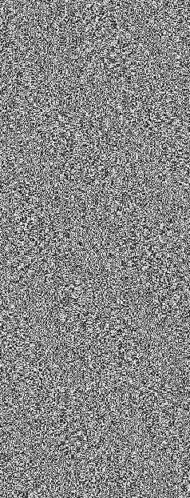

▼映画スタジオ【 パズズ 】＜＜目次へ戻る
中層にスタジオを置く、小規模な映画会社。
作品はモキュメンタリー、モンスターパニックをはじめとした俗悪三流映画が大半。
実際は、彼らの取る映画は「ノンフィクション」である。
出演者に与える難題の殆どは「解決策」が用意されており、その一点においては何故かフェア。 |
|
 |
ミハヤ・オザキ
|
||||||||||||||||
|
【 パズズ 】社長、総監督。トレードマークは白衣。
人の素晴らしさは絶体絶命の極限状態で発揮されると信仰しており、追い詰められた者が奮起する瞬間を映像に収めるのが目的。
異能は認識に干渉するエスパー能力【 知らない知り合い】。
「カットカットカットォーッ！喰われるシーンでは悲鳴が重要なんだってばさァ～。このシーンは最初から撮り直しだなァこりャ……」 |
|||||||||||||||||
| ＜＜目次へ戻る | |||||||||||||||||